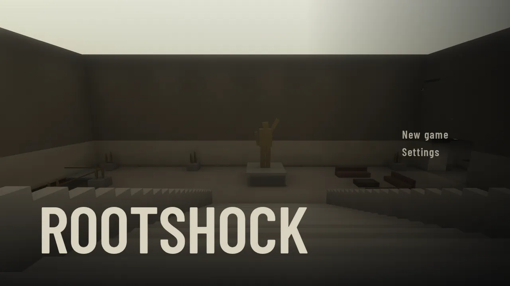
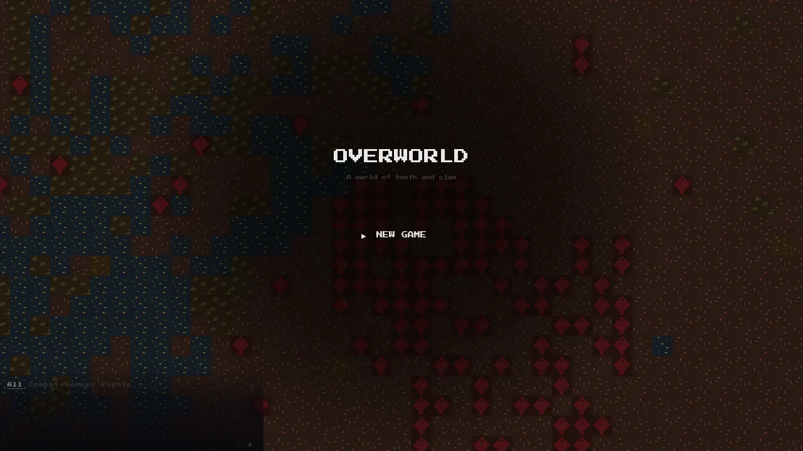

Everything made in the repository, each pictured as it opens in the build this page came from. Choose one to play it in the browser.
3 games · 1 lab · updated 10 Nov 2026

RootshockGame · changed 8 Nov 2026changed in #22A first-person game set in Lowfield Station, a facility deep under a field.Play →
OverworldGame · changed 7 Nov 2026A turn-based roguelike about surviving as an alien creature on a believably simulated world.Play →